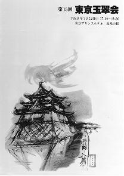

鈴木八朗（すすぎ はちろう）
高松高校 昭和30年卒
(2005年ご逝去)
プロフィール
高松市一番丁で育ち、二番丁小学校、紫雲中学、高松高校を卒業。
東京芸大でデザインを学び、電通に入社。
電通では、クリエイティブ・ディレクターとして、旧国鉄の「ディスカバージャパン」など、数々の印象に残る広告を手がけた。
1997年2月 電通退職。
1998年 長野オリンピックの開会式のポスター「ディスカバー・雪舟」を制作。
1997年6月 ノルウェーで展覧会を開催。
2005年12月 ご逝去
鈴木八朗さんのサイト
第15回東京玉翠会総会の表紙をデザイン
（第１５回東京玉翠会総会プログラムより）

不思議な縁で、５月末に高松に帰った早朝、「玉藻城跡・良櫓（うしとらやぐら）」をスケッチし油絵にした一枚です。
染色体を幅１ミリに拡大したら、長さは四国から首都圏に達する。４色のビーズが組変わるだけで人の個性が伝わる。
私の父の名は遠浄（えんじょう）、母は玉依（たまい）、香川県高松市のライオン通りの興正寺別院。このあたりをかつて御坊さんの通りと言わせた名刹。子供は父の帯の結び目に立って背中の共鳴盤に張りついてナーモアビダンブンを聴いた。チーンの韻を含んで朝餉（あさげ）、子供は闇の好きな子に育った。
島全体を曼陀羅と、八十八カ所が散在する。仏の慈悲の充分の一にと我が名がある。過ぎすぎたもの。